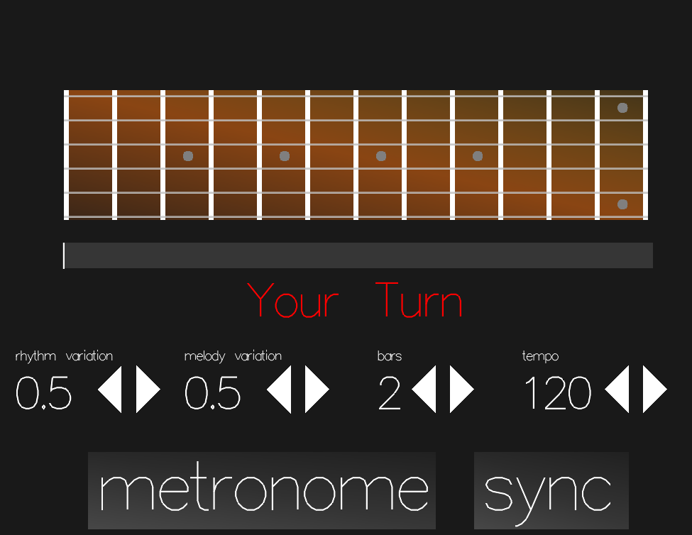

milesAhead
Vision
Global distances and busy schedules have made it harder than ever before to get together and have some improvisational jams with friends. Backing tracks have made it easier to practice improvisation alone, but it gets stale without any external input of ideas. The vision for milesAhead was to create a system that would feed off your phrases and take you down newer paths and hence keep the improvisation session fresher for longer.
Technical Details
milesAhead uses RtAudio, RtMidi, OpenGL and FluidSynth libraries. The user's MIDI inputs are captured, shuffled around using certain parameters and then the new phrases are played back - hence recreating the experience of trading 4's.
Screenshot

User Experience
The user would usually have a set of backing tracks that he likes to play over in various formats - midi, mp3, videos. To keep the system simple, the user can simply 'sync' the milesAhead metronome with the backing track. For this, first the tempo is set using the appropriate buttons on the GUI, the number of bars that are to be traded is set and then 'sync' is pressed on beat 1 of the backing track. The internal metronome is simplistic and can be turned off while playing with the backing track. The parameters for variation of the rhythm and melody that the computer plays back can be set using the appropriate buttons.
Evolution of Project
I had a pretty good idea of what I wanted the project to be like due to some algorithms for composition of musical variations that I had explored for another project. The beauty of this particular way of creating "variations" is that it involves very little hard music theory and hence feels very "organic" while playing. I explored hidden Markov models as an alternative but that seems to be too set in the user's style no matter what phrases the user is playing in that session. Also, these would have required a lot more information to be kept track of - the harmony, chord progressions, the melody as applied to the harmony. I tried to integrate MIDI file input / output for this purpose. Eventually, I envision it to play various formats of backing tracks on its own and capture this data. I also want to put a "Like" button that the user can press if he likes certain phrases and those can then be written to a MIDI file.